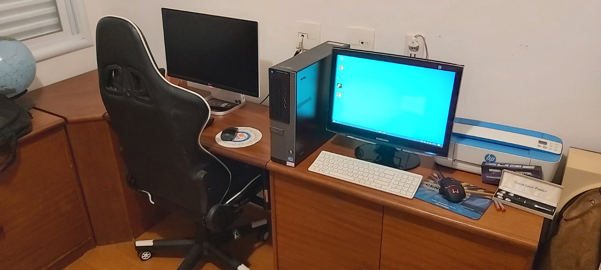
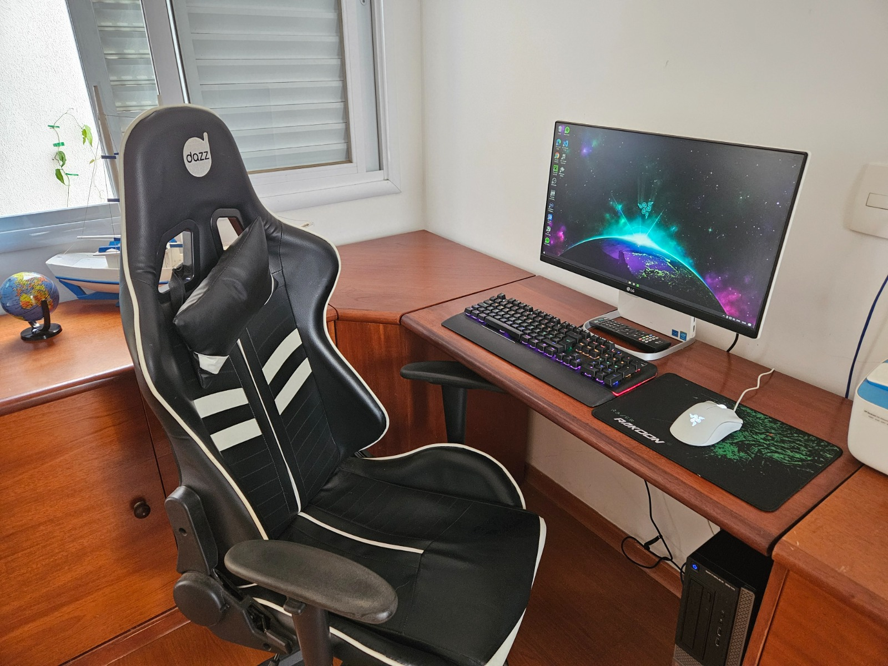
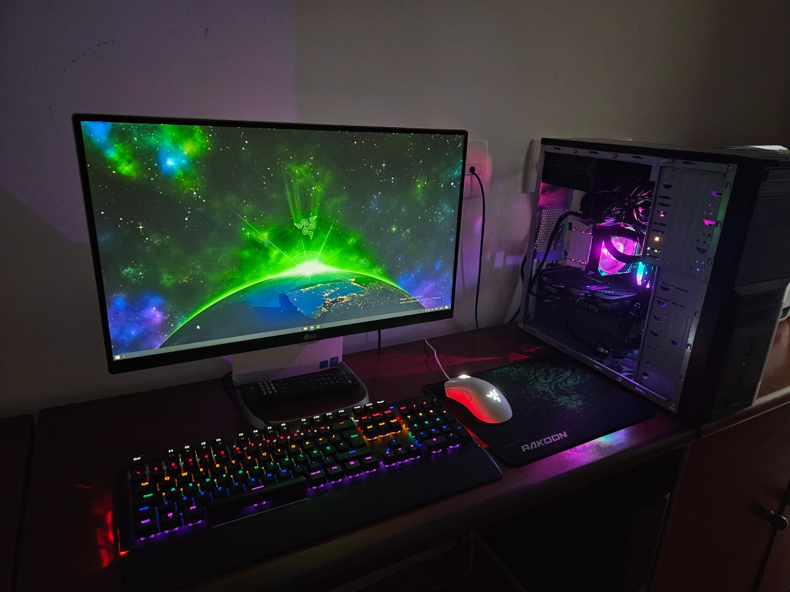
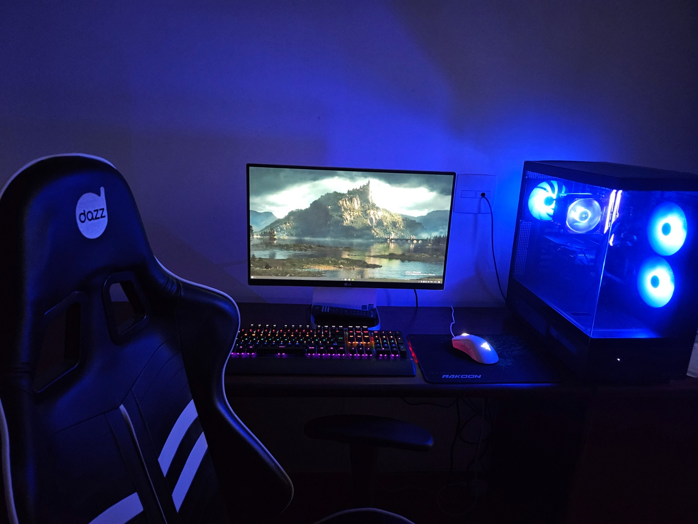
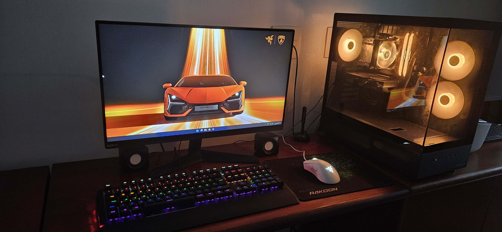

O Desafio de Montar meu PC
O Início de um Sonho
Para começar essa história, precisamos voltar ao ano de 2020. Eu tinha um PC básico do tipo All in One, daqueles que o hardware ficava atrás da coluna do monitor, semelhante ao que é o iMac da Apple, mas este meu sendo da LG. Já tinha há uns poucos anos, mas só usava para coisas básicas como acessar a internet e usar o Word. E então veio a pandemia. Precisei utilizá-lo diariamente para assistir as aulas da minha escola. No entanto eu não só utilizava para fins de estudos mas passei a jogar nele, e é aí que morava o problema. Ele era um tanto quanto limitado para tarefas mais exigentes, pois tendo um hardware de notebook, tinha um Intel Core i5 de 5ª geração, com 4GB de RAM (que na época fiz um upgrade para 8GB) e um HD de 500GB que fazia o PC demorar muito para ligar. Eu baixava os jogos que dava, mas rodava tudo no mínimo do mínimo, sofrendo para rodar a 30fps. Um dos poucos que rodava bem era o Minecraft, que aproveitei muito nessa época. Mas o Fortnite no mínimo do mínimo em resolução HD não pegava 30fps, quase injogável, e olha que nessa época o jogo era bem mais leve que atualmente. O CS (Counter Strike) era pior ainda e não tinha condições mesmo de rodar.
A partir dali, comecei a pesquisar e a acompanhar o mercado de hardware, visando buscar montar um PC melhor. O problema? Eu não tinha dinheiro algum, e isso foi em uma época em que as peças estavam caras. Eu me lembro principalmente da crise das placas em 2021, quando os preços da GPUs estavam completamente fora de controle porque estavam utilizando para mineração de criptomoedas.
No final de 2022, um familiar me arrumou um PC de gabinete, mas era um Dell Optiplex, com um Intel Core i5 de 3ª geração com 8GB RAM e enfim um SSD, meu primeiro contato com esse componente. Foi ali que me interessei por hardware e que comecei com isso, mesmo que inicialmente seja só mexer nas memórias ou discos. Inicialmente eu não sabia formatar um PC e levei quase 1 mês para aprender isso e começar a utilizar o "Micro" (apelido que esse PC tinha). Porém, em questão de desempenho era decepcionante, praticamente igual ao All in One, mas seguir utilizando o Micro porque queria estudar o hardware. Não era viável colocar uma placa de vídeo pois não cabia no gabinete fino.
Uma Nova Oportunidade
No início de 2024 passei em um processo seletivo e comecei a estagiar na Unicamp. Meu primeiro salário veio dali. E com isso comecei a juntar dinheiro para enfim começar a montar um PC novo. Mas isso exigia que inicialmente eu pesquisasse sobre peças, compatibilidade e que eu pudesse montar um hardware que ao mesmo tempo fosse potente, cabesse no meu bolso, afinal, meu salário nesse estágio era bem baixo, já que trabalhava apenas 4 horas por dia.
No mês de setembro de 2024, estava navegando procurando por peças e achei uma promoção de uma placa mãe B650M-E Asus TUF Gaming por 1 mil reais. Era uma promoção boa considerando que as placas mãe desse chipset eram bem caras na época, e eu já estava decidido a montar esse PC na plataforma AM5. Seria a primeira vez que eu teria um computador com um processador da AMD. Comprei a motherboard, fiquei empolgado e feliz que um sonho estaria começando a se realizar.
Compra das Peças e Montagem
Após comprar a primeira peça, comecei a pesquisar e comprar as demais. Depois da motherboard, veio a memória RAM: 2 módulos de 16GB cada da Lexar Ares (32GB total), DDR5, 6400MHz. Depois o processador, um Ryzen 5 7500F comprado no Aliexpress. Optei pelo cooler a ar, por ser mais barato, suficiente para minha CPU e que watercoolers mais baratos possuem risco de vazamento de líquido que pode danificar outros componentes. Na Black Friday comprei um kit de uma placa de vídeo e uma fonte, ambos da MSI: a GPU era uma RTX 4060 Ti, e a fonte a MAG A650BN, de 650W e selo 80+ Bronze.
Essas peças eram suficientes para montar temporariamente em um gabinete velho, e já tinha também o SSD. Montei e fiquei maravilhado com a potência desse PC. A primeira coisa que rodei foi um shader ultrarrealista de Minecraft, e fiquei impressionado. Enfim eu poderia rodar qualquer jogo que eu quisesse. Mas não tinha acabado a saga: eu ainda compraria mais tarde o gabinete e um SSD do tipo NVMe. Estando em fevereiro de 2025, a supermáquina estava pronta para aguentar o que viesse pela frente. Entre abril e maio de 2025 comprei um monitor de 180hz e finalizei o projeto.
Finalização
Meu PC e meu setup permanecem os mesmos desde maio de 2025, de quando escrevo essa data completa 1 ano. Foi a realização de um sonho, que tenho aproveitado muito desde então. Dentre os jogos que essa máquina rodou estão Minecraft com mods e shaders ultrarrealistas, Cities Skylines 2, CS 2 pegando mais de 200fps e Red Dead Redemption 2 (uma obra prima da indústria de games). Ele também me permitiu instalar o Ollama e rodar modelos de Inteligência Artificial (IA) localmente, como GPT-Oss de 20 bilhões de parâmetros. Desde abril de 2026 o SSD NVMe executa o Windows 11, enquanto um SSD SATA secundário possui o Fedora Linux, e é por esse sistema operacional que testo e desenvolvo aplicações úteis para a minha área de TI.
Galeria da evolução do meu Setup

Novembro de 2022
O PC All in One, que era o que eu usava, ao lado do recém adquirido Dell Optiplex.

Setembro de 2024
O "Micro" já era o PC principal, mas o All in One era o monitor. Ele também estava disponível para uso, sendo que na época estava instalado com o Linux Ubuntu. Novos periférios adquiridos, como o teclado Dazz Predator, o mouse Razer Deathadder Essential e o mousepad Rakoon, permanecendo esses em uso no meu setup até os dias atuais.

Dezembro de 2024
O PC novo recém montado temporariamente em um gabinete velho. Permanecia com a tampa aberta durante o uso.

Março de 2025
Projeto do PC finalizado no gabinete novo. O PC All in One ainda permanecia como monitor, com poucos meses depois eu adquirindo um novo monitor.

Abril de 2026
Projeto totalmente finalizado com o novo monitor LG Ultragear de 180hz. Instalado com o Windows 11.